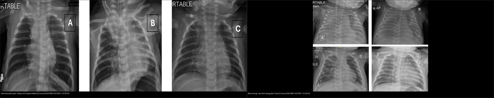
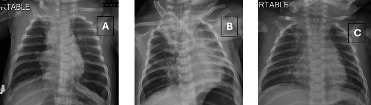
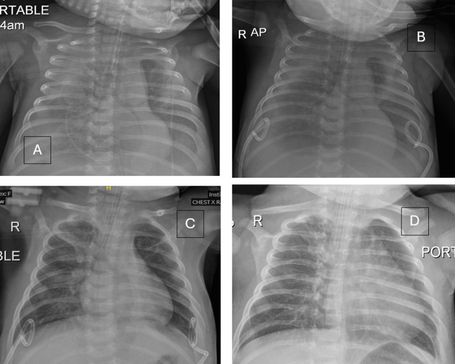
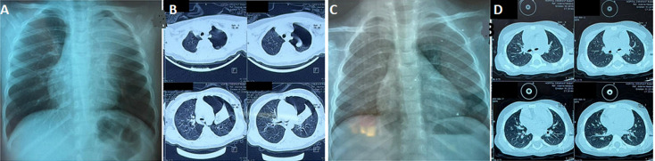
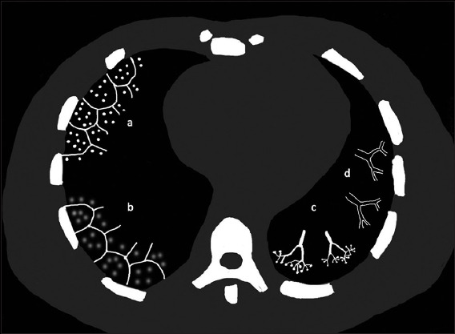
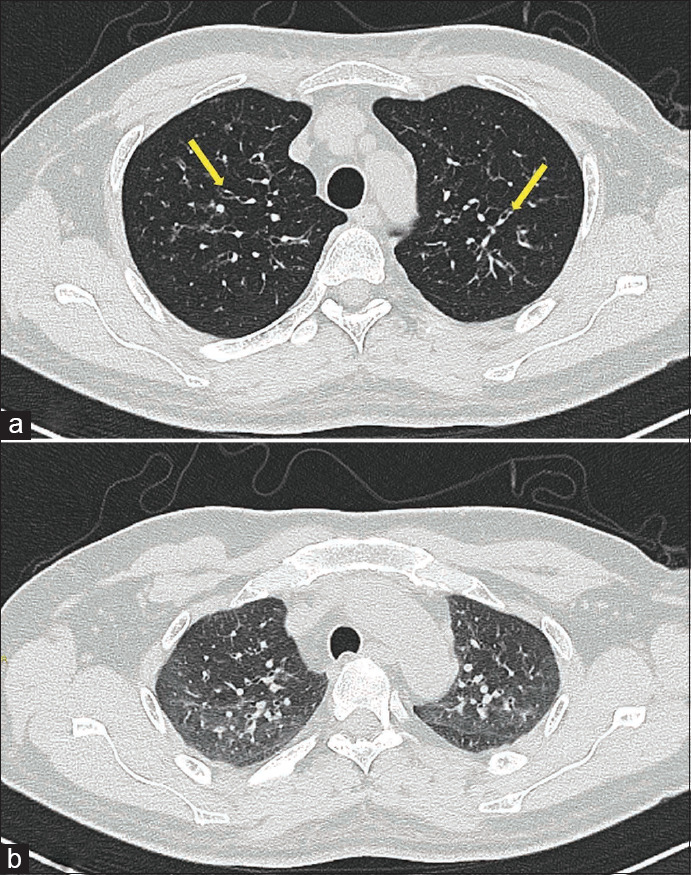

613 — Viêm tiểu phế quản ở nhũ nhi: tăng ứ khí, xẹp vi mô & phân biệt với viêm phổi
Tags: pattern:viem-tieu-phe-quan vung:phe-quan vung:phoi-nhi protocol:X-quang-nguc-nhi protocol:HRCT
Mức chắc chắn (certainty): tổng hợp y văn (literature synthesis) — nhóm tự biên từ 1 bài tổng quan CT viêm tiểu phế quản (Singapore Med J 2026, CC BY-NC-ND) + dữ liệu dịch tễ/biến chứng; các ca trong quiz là ca nguyên văn (verbatim case) chép đúng tuổi – bệnh cảnh – chú thích gốc (Cureus 2026, Pan Afr Med J 2025 — CC BY 4.0).
1. Tổng quan bệnh học – cơ chế hình ảnh
Viêm tiểu phế quản cấp (acute bronchiolitis) là viêm nhiễm cấp tính đường hô hấp dưới ở trẻ < 2 tuổi, đỉnh 2–6 tháng tuổi; tần suất 3–5%/năm ở trẻ < 1 tuổi, RSV chiếm 50–80% ca (Pan Afr Med J 2025). Đây là nguyên nhân nhập viện hàng đầu ở nhũ nhi.
- Bản chất mô học: tiểu phế quản (bronchiole) là đường dẫn khí < 2 mm, KHÔNG có sụn và KHÔNG có tuyến dưới niêm mạc (Singapore Med J 2026). Vì không có sụn, thành tiểu phế quản dễ bị phù nề + chất nhầy + co thắt bít lòng.
- TẠI SAO X-quang thấy "tăng ứ khí" (air trapping): khi lòng tiểu phế quản bị hẹp không đều, nó thành van một chiều — khí vào lúc thở vào nhưng khó thoát ra lúc thở ra; khí ứ dần → phổi giãn quá mức (hyperinflation): cơ hoành dẹt/đè xuống, khoang liên sườn rộng, xương sườn nằm ngang, tăng khoảng sáng sau xương ức.
- TẠI SAO thấy "xẹp vi mô" (microatelectasis): tiểu phế quản bị bít hoàn toàn → khí phía sau bị hấp thu → xẹp phân thùy nhỏ, lan tỏa hoặc rải rác, đôi khi tụ thành đám hình tiểu thùy. Trên phim thẳng dễ nhầm đông đặc viêm phổi.
- TẠI SAO thấy "dày thành phế quản" (peribronchial cuffing — "dấu vòng"): viêm quanh phế quản làm thành phế quản dày, thấy dạng đường ray (tram-track) hoặc vòng khi phế quản cắt ngang.
- TẠI SAO trên CT là nốt "trung tâm tiểu thùy": tiểu phế quản nằm ở tâm tiểu thùy thứ cấp (secondary pulmonary lobule) → tổn thương cho nốt trung tâm tiểu thùy; khi lòng tiểu phế quản bị nhầy/viêm lấp đầy tạo dạng chồi cây (tree-in-bud). Vì tiểu phế quản thành mỏng < 2 mm nên thường không thấy trực tiếp trên X-quang — ta chỉ thấy hệ quả (ứ khí, xẹp vi mô).
- Chặng mạn — viêm tiểu phế quản tắc nghẽn (bronchiolitis obliterans, BO): sau viêm tiểu phế quản nặng (điển hình adenovirus, cũng gặp Mycoplasma, sởi), xơ hóa quanh tiểu phế quản gây hẹp cố định → mosaic giảm tỷ trọng + air trapping khi thở ra trên HRCT (Singapore Med J 2026).
- Ngưỡng định lượng cần nhớ:
- Tiểu phế quản = đường dẫn khí < 2 mm (không sụn, không tuyến).
- SpO₂ < 90–92% → cần oxy; theo dõi/apnea ở trẻ non tháng/nhũ nhi nhỏ.
- Tràn khí màng phổi do viêm tiểu phế quản: 0,5–2% nhũ nhi nhập viện (Pan Afr Med J 2025).
- Tử vong < 1% ở nước phát triển (cao hơn ở trẻ non tháng/tim-phổi bẩm sinh).
- RSV ≈ 3,6 triệu ca nhập viện/năm ở trẻ < 5 tuổi toàn cầu (Cureus 2026).
2. Mẫu hình + chẩn đoán phân biệt theo vị trí (gamut)
Gamut theo chặng bệnh và vị trí trên tiểu thùy thứ cấp:
- Nhũ nhi < 2 tuổi, đợt cấp, toàn phổi: tăng ứ khí (giãn phổi quá mức) + xẹp vi mô lan tỏa + dày thành phế quản — chân dung RSV điển hình.
- Trung tâm tiểu thùy (cellular bronchiolitis): nốt trung tâm tiểu thùy mờ / tree-in-bud / kính mờ trung tâm tiểu thùy — nhiễm trùng, hít sặc, viêm phổi quá mẫn (HP), viêm tiểu phế quản nang.
- Tắc nghẽn khi thở ra (constrictive bronchiolitis / BO): mosaic giảm tỷ trọng + air trapping thì thở ra ± giãn phế quản — hậu nhiễm trùng, viêm khớp dạng thấp, GVHD sau ghép, hội chứng Swyer–James.
- Biến chứng màng phổi: tràn khí màng phổi (rách phế nang do van một chiều) hoặc tràn dịch màng phổi (hiếm, thường transudate vô khuẩn).
Gợi nhớ đọc X-quang viêm tiểu phế quản — 3 tầng: Khí (ứ khí) → Nhu mô (xẹp vi mô, KHÔNG đông đặc thùy) → Màng phổi (tràn khí/dịch).
3. Bảng so sánh phân biệt (ma trận đối chiếu)
| Thực thể (entity) | Hình ảnh điển hình | Chốt vào (rule-in) | Chốt loại (rule-out) | Gợi ý xác nhận |
|---|---|---|---|---|
| Viêm tiểu phế quản cấp (RSV) | Tăng ứ khí lan tỏa (cơ hoành dẹt, liên sườn rộng) + xẹp vi mô + dày thành phế quản; KHÔNG đông đặc thùy | Nhũ nhi < 2 tuổi + wheeze/crackles + tăng ứ khí hai bên | Đông đặc thùy khu trú + sốt cao → viêm phổi | Chẩn đoán lâm sàng (AAP); PCR hô hấp nếu không điển hình |
| Viêm phổi khu trú | Đông đặc thùy/phân thùy đồng nhất, có thể kèm tràn dịch | Đông đặc thùy khu trú + sốt cao | Ứ khí lan tỏa, không đông đặc → viêm tiểu phế quản | X-quang; siêu âm phổi tại giường |
| Xẹp phổi - viêm tiểu phế quản tắc nghẽn (BO) / Swyer–James | Mosaic giảm tỷ trọng + air trapping thì THỞ RA ± giãn phế quản; phổi một bên sáng hơn (Swyer–James) | Air trapping thở ra + giãn phế quản + tiền sử viêm tiểu phế quản nặng (adenovirus) | Ứ khí đơn thuần đợt cấp → không phải BO | HRCT thì thở ra; PFT (tắc nghẽn cố định) |
| Tràn khí màng phổi | Đường trắng màng phổi tạng + mất mạch máu ngoại vi, xẹp phổi phía dưới, trung thất có thể lệch | Đường màng phổi tạng + tăng sáng ngoại vi mất mạch máu | Ứ khí đối xứng hai bên không có đường màng phổi → viêm tiểu phế quản | X-quang ± CT khi nghi ngờ |
| Tràn dịch màng phổi do RSV | Đục mờ hai đáy, dấu màng phổi tạng ngập nước (meniscus bel); có thể hai bên, lượng nhiều | Đục mờ đáy + mất góc sườn hoành, dịch transudate vô khuẩn | Tăng ứ khí đơn thuần → không có dịch | Siêu âm phổi/CT; chọc dịch khi nghi mủ |
| Nốt trung tâm tiểu thùy (HP) | Nốt/kính mờ trung tâm tiểu thùy lan tỏa, không dày thành phế quản nổi | Nốt trung tâm tiểu thùy + tiền sử phơi nhiễm (chim, mốc) | Tree-in-bud → nhiễm trùng/viêm tiểu phế quản cấp | HRCT thì hít vào + thở ra |

Trái: viêm tiểu phế quản cấp — tăng ứ khí hai bên + tăng đậm mạch phế quản, không đông đặc. Phải: cùng bé gái, biến chứng tràn dịch màng phổi lượng nhiều hai bên (mờ đáy, mất góc sườn hoành). Nguồn: Abdulaal F et al., Cureus 2026 (PMC13227901), CC BY 4.0. Ảnh ghép letterbox, giữ tỉ lệ.4. Protocol chụp + hệ phân độ/điểm chuẩn hóa
- X-quang ngực KHÔNG thường quy (AAP 2014): viêm tiểu phế quản là chẩn đoán lâm sàng. Chỉ chụp khi: chẩn đoán không rõ, diễn tiến xấu dù điều trị hỗ trợ, nghi biến chứng, hoặc trẻ không điển hình.
- Đọc X-quang theo 3 tầng (chống bỏ sót):
- Khí/thể tích: phổi có giãn quá mức không? (cơ hoành dẹt/đè xuống, liên sườn rộng, khoang sáng sau xương ức).
- Nhu mô: xẹp vi mô lan tỏa/rải rác (phân biệt đông đặc thùy), dày thành phế quản, xẹp do đặt nội khí quản (không phải đông đặc).
- Màng phổi/trung thất: tràn khí màng phổi, tràn khí trung thất (đường sáng dọc trung thất/tim), tràn dịch màng phổi (mờ đáy hai bên).
- HRCT (không thường quy): chỉ khi nghi biến chứng, ho kéo dài/suy giãn phế quản, hoặc nghi BO. Bắt buộc có thì THỞ RA để phát hiện air trapping (mosaic giảm tỷ trọng giữ nguyên trên phim thở ra).
- Điều trị hỗ trợ (không can thiệp hình ảnh): oxy khi SpO₂ < 90–92%, bù nước, hút mũi, tư vấn. KHÔNG dùng thường quy kháng sinh, thuốc giãn phế quản, corticosteroid, lý liệu pháp ngực (AAP 2014).
- Phòng ngừa: kháng thể đơn dòng RSV (palivizumab/nirsevimab) cho nhũ nhi nguy cơ cao (non tháng, tim-phổi bẩm sinh, suy giảm miễn dịch).
flowchart TD
A["Nhu nhi < 2 tuoi: kho khe, wheeze, retractions"] --> B["Chan doan lam sang viem tieu phe quan"]
B --> C{"Dau hieu nang? (SpO2 < 90-92%, apnea, kho tho tang dan)"}
C -->|Khong| D["Ho tro: bu nuoc, hut mui, theo doi"]
C -->|Co| E["Nhap vien + oxy (HFNC/CPAP)"]
D --> F{"Xau di du dieu tri ho tro?"}
E --> F
F -->|Co| G["X-quang nguc: doc 3 tang"]
F -->|Khong| H["Tiep tuc ho tro, theo doi"]
G --> I{"Dau hieu manh phoi / trung that?"}
I -->|"Duong mang phoi tang, mat mach mau ngoai vi"| J["Tran khi mang phoi: dan luu khi co yeu cau"]
I -->|"Mo da hai ben, mat goc suon hoanh"| K["Tran dich: sieu am/CT, choc dich neu nghi mu"]
I -->|"Chi tang u khi + xep vi mo"| L["Viem tieu phe quan don thuan: tiep tuc ho tro"]
H --> M{"Ho keo dai > vai tuan / kho tho tai dien?"}
M -->|Co| N["HRCT thi THO RA: mosaic + air trapping"]
N --> O["Nghi viem tieu phe quan tac nghen (BO) / Swyer-James: PFT, theo doi dai han"]
5. Biến thể bình thường và cạm bẫy
- Đừng chụp X-quang thường quy — chẩn đoán viêm tiểu phế quản là lâm sàng; chụp "cho chắc" dễ dẫn tới chẩn đoán nhầm viêm phổi và dùng kháng sinh oan (AAP 2014).
- Tăng ứ khí sinh lý ở trẻ nhỏ: lồng ngực nhũ nhi vốn căng, phổi sáng hai bên — đừng gọi bệnh chỉ vì phổi sáng; tìm tính đối xứng + xẹp vi mô/đông đặc khu trú.
- Xẹp vi mô lan tỏa vs đông đặc viêm phổi: xẹp vi mô không có đông đặc thùy, không sốt cao đáp ứng kháng sinh; ngược lại đông đặc thùy đồng nhất → viêm phổi.
- Xẹp phổi do đặt nội khí quản: hình xẹp thùy (điển hình thùy trên phải) sau đặt ống — đừng gọi là đông đặc/viêm phổi (xem Ca 1 panel B).
- Tràn dịch do RSV thường là transudate vô khuẩn (Cureus: protein 0,37 g/dL, WBC 3,75 tế bào/µL) → không mặc định kháng sinh chỉ vì có dịch.
- Air trapping trên CT cũng gặp trong HP/viêm phổi quá mẫn (mosaic do air trapping) — phải đọc cùng bối cảnh và tiền sử phơi nhiễm, không quy hết cho viêm tiểu phế quản (Singapore Med J 2026).
- Cạm bẫy mặt cắt: dịch màng phổi đáy phổi trên phim thẳng dễ bị đọc thành cơ hoành dâng cao; xem bờ tự do của dịch, dấu màng phổi tạng ngập nước, hoặc siêu âm phổi/CT nằm nghiêng để phân định.
6. Tự lượng giá — Blind Quiz (ảnh trơn ngoài, đáp án ẩn trong khối chi tiết)
Ca 1 — Bé gái 8 tuần tuổi, trước đó khỏe mạnh, nhập viện vì suy hô hấp. X-quang lúc nhập viện. Mô tả trước khi mở đáp án.

- Gợi ý lâm sàng: khò khè, co lõm liên sườn, suy hô hấp tiến triển ở nhũ nhi nhỏ.
- Câu hỏi: Thể tích phổi ra sao? Có đông đặc thùy không? Chẩn đoán và nguyên nhân hàng đầu?
Bấm để hiện đáp án (findings + chẩn đoán)
- Dấu hiệu: (A) phổi tăng ứ khí hai bên + tăng đậm mạch phế quản — phù hợp viêm tiểu phế quản cấp; KHÔNG đông đặc thùy. (B) sau đặt nội khí quản: xẹp thùy trên phải + mờ bên trái (xẹp, không phải đông đặc). (C) trước rút ống: phổi sáng đều, không tổn thương.
- Chẩn đoán: viêm tiểu phế quản cấp do RSV (bệnh nhân 8 tuần tuổi). Trên X-quang: tăng ứ khí + xẹp vi mô, không đông đặc thùy.
- Nguồn ảnh: Abdulaal F et al., Cureus 2026 (PMC13227901), Figure 1, CC BY 4.0.
Ca 2 — Cùng bé gái trên, diễn tiến nặng, cần đặt lại nội khí quản. X-quang mới. Chuyện gì xảy ra?

- Câu hỏi: Tổn thương mới ngoài nhu mô phổi là gì? Xử trí? Dịch có phải mủ không?
Bấm để hiện đáp án (findings + chẩn đoán)
- Dấu hiệu: (A) tràn dịch màng phổi lượng nhiều hai bên — mờ đáy, mất góc sườn hoành, mờ đậm hơn bên phải; (B–D) sau đặt catheter pigtail hai bên, dịch rút dần, phổi nở lại.
- Chẩn đoán – xử trí: tràn dịch màng phổi hai bên — biến chứng hiếm của viêm tiểu phế quản RSV nặng; dẫn lưu bằng pigtail + điều trị hỗ trợ. Dịch là transudate vô khuẩn (protein 0,37 g/dL, WBC rất thấp) → không phải mủ, không mặc định kháng sinh.
- Nguồn ảnh: Abdulaal F et al., Cureus 2026 (PMC13227901), Figure 2, CC BY 4.0.
Ca 3 — Bé gái 11 tháng tuổi, viêm tiểu phế quản RSV, đột ngột khó thở nặng hơn. X-quang (A) và CT (B); sau đó là phim giải quyết (C, D).

- Câu hỏi: Dấu hiệu chốt trên X-quang/CT? Đây là biến chứng gì, gặp bao nhiêu %?
Bấm để hiện đáp án (findings + chẩn đoán)
- Dấu hiệu: (A, B) tràn khí màng phổi trái + xẹp đỉnh phổi trái; (C, D) sau điều trị — tràn khí tiêu hết, phổi nở tốt trở lại.
- Chẩn đoán: tràn khí màng phổi tự phát biến chứng viêm tiểu phế quản RSV — gặp 0,5–2% ở nhũ nhi nhập viện. Cơ chế: van một chiều gây ứ khí quá mức → vỡ phế nang, khí vào khoang màng phổi. Ở ca này điều trị bảo tồn thành công.
- Nguồn ảnh: Eddukar H et al., Pan Afr Med J 2025 (PMC12741973), Figure 1, CC BY 4.0.
Ca 4 — Sơ đồ tổn thương CT của viêm tiểu phế quản. Ghép mỗi hình (a–d) với tên dấu hiệu.

- Câu hỏi: a, b, c, d tương ứng dấu hiệu nào? Dấu hiệu nào nằm ở trung tâm tiểu thùy?
Bấm để hiện đáp án (findings + chẩn đoán)
- (a) nốt trung tâm tiểu thùy (centrilobular micronodules) — nằm ở tâm tiểu thùy thứ cấp. (b) nốt kính mờ trung tâm tiểu thùy (centrilobular ground-glass nodules). (c) dạng chồi cây (tree-in-bud) — lòng tiểu phế quản bị nhầy/viêm lấp đầy. (d) giãn tiểu phế quản sát màng phổi (bronchiolectasis).
- Chốt: tất cả đều bám theo trung tâm tiểu thùy thứ cấp — vì tổn thương ở tiểu phế quản (< 2 mm) nằm ở tâm tiểu thùy.
- Nguồn ảnh: Lee ECH et al., Singapore Med J 2026 (PMC13405576), Figure 1, CC BY-NC-ND 4.0 (dùng nguyên bản, không chỉnh sửa).
Ca 5 — Bệnh nhân sau ghép tế bào gốc, ho và khó thở kéo dài. So sánh 2 phim CT (hít vào vs thở ra).

- Câu hỏi: Phim thở ra (b) cho thấy gì so với phim hít vào (a)? Nghĩ chặng bệnh nào?
Bấm để hiện đáp án (findings + chẩn đoán)
- Dấu hiệu: (a) hít vào — mosaic giảm tỷ trọng; (b) thở ra — các ổ giảm tỷ trọng giữ nguyên, không giảm thể tích = air trapping; kèm dày và giãn thành phế quản.
- Chẩn đoán: viêm tiểu phế quản tắc nghẽn (bronchiolitis obliterans) — ở ca này sau ghép tế bào gốc (GVHD). Bài học: air trapping chỉ lộ khi chụp thì THỞ RA; ở trẻ, chặng này thường hậu nhiễm trùng (adenovirus).
- Nguồn ảnh: Lee ECH et al., Singapore Med J 2026 (PMC13405576), Figure 15, CC BY-NC-ND 4.0 (dùng nguyên bản, không chỉnh sửa).
Bài liên quan chéo
- 600 – Tổng quan Hệ Nhi khoa
- 615 – Viêm phổi nhi: round pneumonia, virus vs vi khuẩn & hít sặc dầu hỏa
- 610 – Suy hô hấp sơ sinh & dị dạng phổi
- 612 – Cấp cứu đường thở trên trẻ em
- 051 – Tiểu phế quản & khảm (mẫu hình tiểu phế quản ở người lớn)
- 032 – Kính mờ & lát đá (mosaic/air trapping)
Ảnh
- Tên file:
NNN_slug_Modality_SourceID.jpg. Chi tiết nguồn + giấy phép từng ảnh:images/CREDITS.mdvàsources.md. - Ảnh CXR/CT ca nguyên văn: CC BY 4.0 (Cureus 2026 PMC13227901; Pan Afr Med J 2025 PMC12741973) — được phép tải/ghép, ghi nguồn.
- Ảnh CT minh họa mẫu hình: CC BY-NC-ND 4.0 (Singapore Med J 2026 PMC13405576) — giữ nguyên bản, KHÔNG crop/ghép.
- Ảnh ghép đối chiếu (
composite_*.jpgtrongimages/) chỉ dùng ảnh CC BY, tạo bằngtools/make_composite.py(letterbox, không crop/kéo giãn).
Không dùng để chẩn đoán độc lập khi chưa có người hướng dẫn.